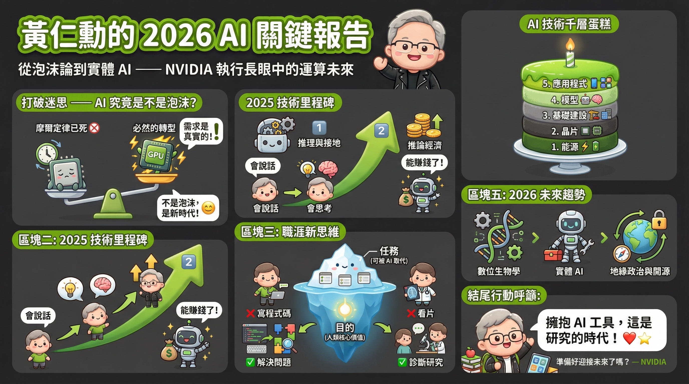

NVIDIA 黃仁勳談推理模型、機器人與「AI 泡沫」的反駁
節目來源：No Priors Podcast
發布日期：2026 年 1 月 8 日
主持人：Sarah Guo、Elad Gil
來賓：黃仁勳 (Jensen Huang)，NVIDIA 創辦人暨執行長
推薦對象：AI 從業人員、科技投資者、對機器人學有興趣者、關注科技產業趨勢的學習者
節目簡介
在這場深度訪談中，NVIDIA 執行長黃仁勳與 No Priors Podcast 主持人 Sarah Guo 及 Elad Gil 進行了一場精彩對話。黃仁勳深入探討了 AI 的現狀、強力反駁了「AI 泡沫」的說法，並對機器人技術（Robotics）與地緣政治提出了獨到見解。這是一場結合技術洞察與商業智慧的頂尖對談，為 2026 年 AI 產業的發展方向提供了重要參考。
核心主題一覽
六大核心主題
- 反駁「AI 泡沫」：加速運算是必然趨勢
- 2025 年回顧：推理模型與獲利能力
- 就業市場新觀點：任務 (Task) vs. 目的 (Purpose)
- 2026 年展望：機器人與數位生物學
- 地緣政治與開源：DeepSeek 與全球協作
- 能源議題：AI 推動綠能創新
1. 反駁「AI 泡沫」論述：加速運算是必然趨勢
黃仁勳強烈反駁 AI 是泡沫的觀點，他提出了一個更宏觀的計算架構轉型論點：
摩爾定律的終結
即使沒有 ChatGPT 或生成式 AI，NVIDIA 仍會取得巨大成功。原因在於摩爾定律（Moore's Law）已大致失效，CPU 無法再像過去那樣每年提供顯著的效能提升與成本下降。
加速運算的必要性
全球資料中心必須從通用運算（General Purpose Computing）轉向加速運算（Accelerated Computing），以處理電腦繪圖、SQL 數據處理、科學模擬等任務。這是一個硬體更新週期，與 AI 是否存在泡沫無關。
產能短缺證明需求
不僅是 OpenAI，所有新創公司、大學研究人員以及各行各業都在渴求算力。這顯示需求是真實且全面性的，並非僅由少數公司驅動。
「AI 泡沫論調是為了嚇唬人退出市場，實際情況是計算需求的量是瘋狂的。」— 黃仁勳
2. 2025 年的回顧：推理模型與獲利能力
推理 (Reasoning) 與接地 (Grounding)
2025 年最大的驚喜在於 AI 在推理能力與「接地」（Grounding）方面的巨大進步。所謂「接地」，指的是減少幻覺、基於事實的能力。這讓 AI 的輸出更加可靠，適用於更多關鍵任務場景。
推論的獲利能力
業界證明了推論階段產生的 Token 具有極高的經濟價值。例如：
- Open Evidence：醫療領域 AI 應用
- Cursor：程式碼生成工具
- Harvey：法律 AI 助手
這些應用展現了高利潤率（毛利率可達 90%），證明人們願意為高品質的 AI 產出付費。
3. 就業市場新觀點：任務 (Task) vs. 目的 (Purpose)
針對 AI 取代工作的擔憂，黃仁勳提出了一個重要的分析框架：
核心觀點：工作的「任務」可能會被自動化，但「目的」不會。
軟體工程師的例子
- 任務：編寫程式碼 (Coding)
- 目的：解決問題
AI 協助編碼讓工程師能解決更多、更複雜的問題，而非被取代。
放射科醫師的例子
- 任務：判讀影像
- 目的：診斷疾病與研究
雖然 AI 能輔助看片，但醫師的診斷專業與判斷力仍是核心。AI 實際上讓醫師能處理更多病例，導致醫師需求不減反增。
實體 AI 解決勞動力短缺
由於人口老化與人們不願從事某些工作（如卡車司機），世界面臨嚴重的勞動力短缺。機器人與實體 AI 將填補這些缺口，而非搶走工作。
4. 2026 年展望：機器人與數位生物學
數位生物學的「ChatGPT 時刻」
黃仁勳預測數位生物學（Digital Biology）將迎來重大突破。AI 將能理解並生成：
- 蛋白質結構
- 化學分子
- 細胞結構
這將徹底改變藥物研發，縮短新藥開發時程，降低成本。
推理型機器人
自駕車與機器人將從單純的感知與規劃，進化到具備「推理能力」。這讓它們能處理未曾見過的突發狀況（Out of Distribution），實現真正的自主運作。
萬物皆機器人
「所有會動的東西都將變成機器人。」— 黃仁勳
這不僅限於人形機器人，還包括：
- 建築機械（怪手、起重機）
- 農業設備（拖拉機、收割機）
- 物流系統（無人搬運車、倉儲機器人）
- 服務機器人（清潔、配送）
5. 地緣政治與開源生態
對美中關係的樂觀態度
黃仁勳對 2026 年的美中關係持樂觀態度，認為「脫鉤（Decoupling）」是不切實際且天真的。他強調兩國經濟高度耦合，應在確保國家安全的前提下尋求建設性合作。
開源至關重要
他特別指出中國的 DeepSeek 模型是過去幾年最重要的 AI 論文之一，這證明了：
- 美國新創公司也從全球（包含中國）的開源貢獻中受益
- 開源是創新的飛輪，切斷它將扼殺產業發展
- 若沒有開源，許多產業的創新將會窒息
6. 能源議題：AI 推動綠能創新
黃仁勳強調：沒有能源就沒有 AI 工廠。
AI 的巨大能源需求正在反向推動：
- 綠能技術：太陽能、風能的效率提升
- 電池技術：儲能系統的創新
- 核能復興：小型模組化反應爐（SMR）的發展
- 電網升級：智慧電網與分散式能源
AI 產業的需求成為推動能源轉型的重要動力。
專家團隊分析
記者視角：新聞價值與公眾影響
- 「AI 工廠」概念：生動形象地解釋了 AI 基礎設施的必要性，易於公眾理解
- 「任務 vs. 目的」框架：為個人適應 AI 時代提供了啟示，有助緩解就業恐慌
- 地緣政治觀點：提供了與主流脫鉤論不同的視角，具有高度新聞性
分析師視角：商業洞察
- AI 代幣毛利率達 90%：顯示 AI 服務的巨大商業潛力
- 計算需求持續增長：基礎設施投資仍有巨大空間
- 垂直應用價值：特定領域（醫療、法律、程式）的 AI 應用展現高利潤
技術專家視角：深度洞察
- 推理能力突破：AI 從感知走向真正的認知與推理
- 多模態整合：文字、影像、語音的統一處理成為趨勢
- 長上下文處理：能處理更長文件與更複雜任務
AI 技術堆疊與機器人學關聯圖
關鍵要點總結
| 主題 | 核心觀點 | 影響 |
|---|---|---|
| AI 泡沫 | 計算需求真實存在，非泡沫 | 持續投資基礎設施 |
| 推理能力 | 2025 年重大突破 | AI 可靠性大幅提升 |
| 就業影響 | 改變任務，不改變目的 | 技能升級而非失業 |
| 機器人 | 萬物皆機器人 | 勞動力短缺解方 |
| 數位生物學 | 即將迎來 ChatGPT 時刻 | 藥物研發革命 |
| 開源生態 | 創新的關鍵飛輪 | 維持全球協作 |
總結與未來展望
這場訪談清晰地描繪了 2026 年 AI 產業的發展藍圖。黃仁勳的觀點有力地駁斥了 AI 泡沫論，強調了計算需求的真實增長和 AI 應用場景的廣泛性。從數位生物學到推理型機器人，從能源創新到全球開源協作，AI 正在重塑各個產業。
對於台灣產業而言，這場訪談提供了重要啟示：
- 持續投資 AI 基礎設施：晶片製造、資料中心、能源供應
- 擁抱開源生態：參與全球 AI 創新飛輪
- 關注垂直應用：醫療、製造、服務等領域的 AI 整合
- 培育跨領域人才：AI 與機器人、生物科技的交叉人才
正如黃仁勳所言，樂觀主義者應推動社會前進，而非僅提出末日論調。在這個 AI 快速發展的時代，積極參與、理性投資、持續學習，才是應對變革的最佳策略。
內容整理自 No Priors Podcast，2026 年 1 月 8 日發布